We study convection of an incompressible Newtonian fluid heated from below in a two-dimensional domain of height  : the Bénard problem. The lower wall is maintained at a temperature 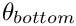 and the upper wall is maintained at a temperature 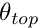, where 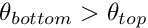 . The governing equations are the (2D) Navier–Stokes equations under the Boussinesq approximation, in which all variations in physical properties with temperature are neglected, apart from that of the density in the gravitational-body-force term in the momentum equations. This "buoyancy" term is given by
: the Bénard problem. The lower wall is maintained at a temperature 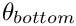 and the upper wall is maintained at a temperature 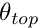, where 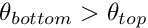 . The governing equations are the (2D) Navier–Stokes equations under the Boussinesq approximation, in which all variations in physical properties with temperature are neglected, apart from that of the density in the gravitational-body-force term in the momentum equations. This "buoyancy" term is given by
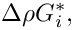
where 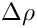 is the variation in density and 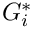 is the  -th component of the gravitational body force. Under the additional assumption that variations in temperature are small, we can use the linear relationship
-th component of the gravitational body force. Under the additional assumption that variations in temperature are small, we can use the linear relationship
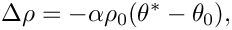
where  is the coefficient of thermal expansion of the fluid, is the (dimensional) temperature and is the density at the reference temperature 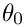 .
is the coefficient of thermal expansion of the fluid, is the (dimensional) temperature and is the density at the reference temperature 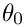 .
The equations governing the fluid motion are thus the Navier–Stokes equations with the inclusion of the additional buoyancy term. In Cartesian coordinates, we have
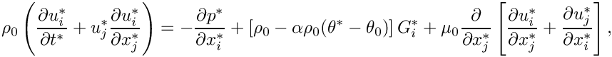
and
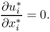
Here, 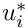 is the -th (dimensional) velocity component and 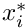 is the position in the  -th coordinate direction; 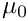 is the dynamic viscosity of the fluid at the reference temperature and 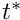 is the dimensional time.
-th coordinate direction; 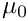 is the dynamic viscosity of the fluid at the reference temperature and 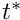 is the dimensional time.
The equation that governs the evolution of the temperature field is the advection-diffusion equation where the "wind" is the fluid velocity. Thus,
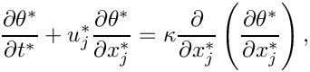
where  is the (constant) thermal diffusivity of the fluid.
is the (constant) thermal diffusivity of the fluid.
We choose the height of the domain, , as the length scale and let the characteristic thermal diffusion speed over that length, 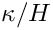, be the velocity scale, so that the Péclet number, 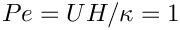 . The fluid pressure is non-dimensionalised on the viscous scale, 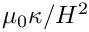 , and the hydrostatic pressure gradient is included explicitly, so that we work with the dimensionless excess pressure. The temperature is non-dimensionalised so that it is -0.5 at the upper (cooled) wall and 0.5 at the bottom (heated) wall and the reference temperature is then 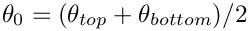. Finally, the timescale is chosen to be the thermal diffusion timescale, 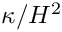 . Hence
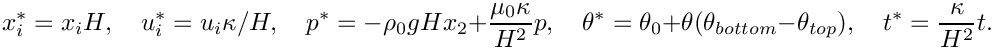
The governing equations become
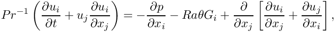
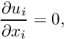
and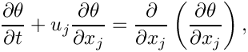
. The appropriate dimensionless numbers are the Prandtl number 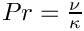, and the Rayleigh number, 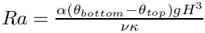 ;  is the acceleration due to gravity and 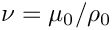 is the kinematic viscosity of the fluid.
is the acceleration due to gravity and 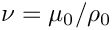 is the kinematic viscosity of the fluid.
We consider the solution of this coupled set of equations in a two-dimensional domain 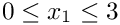 , 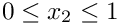 . The boundary conditions are no-slip at the top and bottom walls
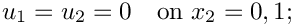
constant temperature at the top and bottom walls (heated from below)
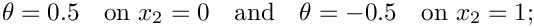
and symmetry boundary conditions at the sides:
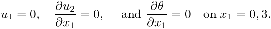
We assume that gravity acts vertically downward so that 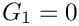 and 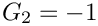 .
There is a trivial steady-state solution that consists of a linearly-varying temperature field balanced by a quadratic pressure field:
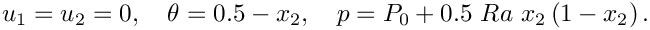

A linear stability analysis shows that this solution becomes unstable via an up-down, symmetry-breaking, pitchfork bifurcation at a critical Rayleigh number of 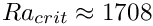 with a critical wavenumber of 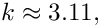 see for example Hydrodynamic and Hydromagnetic Stability by S. Chandrasekhar OUP (1961). Thus, for 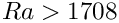 there are three possible steady solutions, the (unstable) trivial steady state and two (stable) symmetry-broken states. In principle, all three states can be computed directly by solving the steady equations. However, we typically find that if the steady computation is started with a zero initial guess for the velocity and temperature, the Newton method converges to the trivial state. In order to demonstrate that this state is indeed unstable we therefore apply a time-dependent, mass-conserving perturbation to the vertical velocity at the upper wall and time-march the system while rapidly reducing the size of the perturbation. The system then evolves towards the nontrivial steady state as shown in the animation from which the plots shown above were extracted. (In the next tutorial where we discuss the adaptive solution of this problem we shall demonstrate an alternative technique for obtaining this solutions).
Note that by choosing our domain of a particular size and applying symmetry conditions at the sidewalls we are only able to realise a discrete set of wavelengths (those that exactly fit into the box). At the chosen Rayleigh number, 1800, only one of these modes is unstable; that of wavelength 2.
Global parameters and functions
The problem contains three global parameters, the Péclet number, the Prandtl number and the Rayleigh number which we define in a namespace, as usual. In fact, 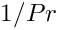 is the natural dimensionless grouping, and so we use the inverse Prandtl number as our variable.
The driver code
In the driver code we set the direction of gravity and construct our problem, using the new BuoyantQCrouzeixRaviartElement, a multi-physics element, created by combining the QCrouzeixRaviart Navier-Stokes elements with the QAdvectionDiffusion elements via multiple inheritance. (Details of the element's implementation are discussed in the section Creating the new BuoyantQCrouzeixRaviartElement class below.)
We assign the boundary conditions at the time  and initially perform a single steady solve to obtain the trivial (and temporally unstable) trivial solution; see the section Comments for a more detailed discussion of the
and initially perform a single steady solve to obtain the trivial (and temporally unstable) trivial solution; see the section Comments for a more detailed discussion of the Problem::steady_newton_solve() function.
The result of this calculation is the trivial symmetric base flow. We next timestep the system using the (unstable) steady solution as the initial condition. As time increases, the flow evolves to one of the stable asymmetric solutions, as shown in the animation of the results. As usual, we only perform a few timesteps when the code is used as a self-test, i.e. if any command-line parameters are passed to the driver code.
The problem class
The problem class contains five non-trivial functions: the constructor, the fix_pressure(...) function, as well as the functions set_boundary_conditions(...), actions_before_implicit_timestep(...) and doc_solution(...), all discussed below.
The constructor
We pass the element type as a template parameter to the problem constructor, which has no arguments. The constructor creates a BFD<2> timestepper and builds a RectangularQuadMesh of  elements.
elements.
Next, the boundary constraints are imposed. We pin all velocities and the temperature on the top and bottom walls and pin only the horizontal velocity on the sidewalls. Since the domain is enclosed, the pressure is only determined up the an arbitrary constant. We resolve this ambiguity by pinning a single pressure value, using the fix_pressure(...) function.
We complete the build of the elements by setting the pointers to the physical parameters and finally assign the equation numbers
The function set_boundary_conditions(...)
In order to examine the stability of the symmetric state, we impose a time-dependent boundary condition that transiently perturbs the vertical velocity field at the upper boundary. Our boundary condition is
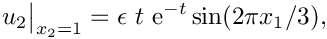
where  . The perturbation is zero at , tends to zero as 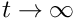 , and is mass conserving. This is implemented in the function below
. The perturbation is zero at , tends to zero as 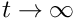 , and is mass conserving. This is implemented in the function below
The function fix_pressure(...)
This function is a simple wrapper to the element's fix_pressure(...) function.
The function actions_before_implicit_timestep()
This function is used to ensure that the time-dependent boundary conditions are set to the correct value before solving the problem at the next time level.
The function doc_solution(...)
This function writes the complete velocity, pressure and temperature fields to a file in the output directory.
Creating the new BuoyantQCrouzeixRaviartElement class
The sketch below illustrates how the new multi-physics BuoyantQCrouzeixRaviartElement is constructed by multiple inheritance from the two existing single-physics elements:
- The nine-noded two-dimensional
QCrouzeixRaviartElementis based on a nine-node quadrilateral geometricFiniteElementfrom theQElementfamily. All of itsNodesstore two values, the horizontal and vertical velocity, respectively. The element also stores internalDatawhich represents the (discontinuous) pressure degrees of freedom; in the sketch thisDatais represented by the dashed box.
- The two-dimensional
QAdvectionDiffusionElementis based on the same geometricFiniteElementand stores one value (the temperature, ) at each
) at each Node.
Both elements are fully-functional and provide their contributions to the global system of nonlinear algebraic equations that is solved by Newton's method via the two member functions fill_in_contribution_to_residuals(...) and
fill_in_contribution_to_jacobian(...).
- The
QAdvectionDiffusionElement'smember functionfill_in_contribution_to_residuals(...)computes the element's contribution to the global residual vector for a given "wind". The "wind" is specified by its virtual member functionget_wind_adv_diff(...)and in the single-physics advection diffusion problems studied so far, the "wind" tended to specified a priori by the user. The element's
member functionfill_in_contribution_to_jacobian(...)computes the elemental Jacobian matrix, i.e. the derivatives of the elemental residual vector with respect to its unknown nodal values (the temperatures).
- Similarly, the
QCrouzeixRaviartElement'smember functionfill_in_contribution_to_residuals(...)computes the element's contribution to the global residual vector for a given body force. The body force is specified by its virtual member functionget_body_force_nst(...)and in the single-physics Navier-Stokes problems studied so far, the body force tended to specified a priori by the user. The element's member functionfill_in_contribution_to_jacobian(...)computes the elemental Jacobian matrix, i.e. the derivatives of the elemental residual vector with respect to its unknown nodal and internal values (the velocities and the pressure).
When combining the two single-physics elements to a multi-physics element, we have to take the interaction between the constituent equations into account: In the coupled problem the "wind" in the advection-diffusion equations is given by the Navier-Stokes velocities, while the body force in the Navier-Stokes equations is a function of the temperature. When implementing these interactions we wish to recycle as much of the elements' existing functionality as possible. This may be achieved by the following straightforward steps:
- Construct the combined multi-physics element by multiple inheritance.
- Overload the
FiniteElement::required_nvalue(...)function to ensure that eachNodeprovides a sufficient amount of storage for the (larger) number of nodal values required in the multi-physics problem.
- Overload the constituent element's member functions that indicate which nodal value corresponds to which type of degree of freedom. For instance, in the single-physics advection-diffusion problem, the temperature is stored at the zero-th nodal value whereas in the combined multi-physics element, the temperature is stored as the second value, as shown in the above sketch.
- Provide a final overload for the element's
fill_in_contribution_to_residuals(...)andfill_in_contribution_to_jacobian(...)functions.
The former simply concatenates the residual vectors computed by the constituent single-physics elements. The latter function is easiest to implement by finite differencing the combined element's residual vector. [A more efficient approach (in terms of cpu time, not necessarily terms of development time!) is to recycle the diagonal blocks computed by the constituent elements'sfill_in_contribution_to_jacobian(...)functions and to use finite-differencing only for the off-diagonal (interaction) blocks; see the section Comments a more detailed discussion of this technique.]
That's all! Here is the implementation:
The class contains a single new physical parameter, the Rayleigh number, as usual referenced by a pointer to a double precision datum,
with suitable access functions.
The constructor calls the constructors of the component classes (QCrouzeixRaviartElement and QAdvectionDiffusionElement) and initialises the value of the Rayleigh number to zero, via a static default parameter value.
We must overload the function FiniteElement::required_nvalue() because the new element will store DIM+1 unknowns at each node: DIM fluid velocity components and the value of the temperature, as shown in the sketch above.
In the standard single-physics advection-diffusion elements the temperature is the only value stored at the nodes and is stored as value(0). Similarly, in the single-physics Navier–Stokes elements, the fluid velocities are stored in the first DIM nodal values. In our new multi-physics element, we must decide where to store the different variables and then inform the single-physics elements of our choice. As indicated in the above sketch, we choose to store the temperature after the fluid velocities, so that it is value(DIM). The recommended mechanism for communicating the location of the variables to the single-physics elements is to use an index function. Hence, single-physics elements that are to be the components of multi-physics elements must have an index function for their variables. For instance, the function u_index_adv_diff(...) is used in the AdvectionDiffusionEquations class to read out the position (index) at which the advected variable (the temperature) is stored. That function is now overloaded in our multi-physics element:
We need not overload the index function for the fluid velocities because they remain stored in the first DIM positions at the node.
The coupling between the two sets of single-physics equations is achieved by overloading the two functions get_wind_adv_diff(), used in the advection-diffusion equations and get_body_force_nst(), used in the Navier–Stokes equations
The elemental residual vector is composed of the residuals from the two single-physics elements and we simply call the underlying functions for each element in turn.
Finally, we compute the Jacobian matrix by finite-differencing the element's combined residual vector, using the default implementation of the fill_in_contribution_to_jacobian(...) function in the FiniteElement base class:
Finally, we overload the output function to print the fluid velocities, the fluid pressure and the temperature.
Comments and Exercises
Comments
- The
steady_newton_solve()function:
In most previous examples we have encountered two main interfaces tooomph-lib'sNewton solver:
- The function
Problem::newton_solve()employs Newton's method to solve the system of nonlinear algebraic equations arising from theProblem'sdiscretisation. The currentDatavalues are used as the initial guess for the Newton iteration. On return from this function, all unknownDatavalues will have been assigned their correct values so that the solution of the problem may be plotted by calls to the elements'outputfunctions. We tended to use this function to solve steady problems.
- Given the solution at time 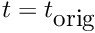 , the unsteady Newton solver
Problem::unsteady_newton_solve(dt,...)increments time bydt, shifts the "history" values and then computes the solution at the advanced time, 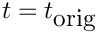 +dt. On return from this function, all unknownDatavalues (and the corresponding "history" values) will have been assigned their correct values so that the solution at time +dtmay be plotted by calls to the elements'outputfunctions. We tended to use this function for unsteady problems.
Problem::unsteady_newton_solve(...)function shows that this function is, in fact, a wrapper aroundProblem::newton_solve(), and that the latter function solves the discretised equations including any terms that arise from an implicit time-discretisation. The only purpose of the wrapper function is to shift the history values before taking the next timestep. This raises the question how to compute steady solutions (i.e. solutions obtained by setting the time-derivatives in the governing equation to zero) of aProblemthat was discretised in a form that allows for timestepping, as in the problem studied here. This is the role of the functionProblem::steady_newton_solve(): The function performs the following steps:
- Disable all
TimeSteppersin theProblemby calling theirTimeStepper::make_steady()member function.
- Call the
Problem::newton_solve()function to compute the solution of the discretised problem with all time-derivatives set to zero.
- Re-activate all
TimeSteppers(unless they were already in "steady" mode when the function was called).
- Call the function
Problem::assign_initial_values_impulsive()to ensure that the "history" values used by the (now re-activated)TimeSteppersare consistent with an impulsive start from the steady solution just computed.
Datavalues (and the corresponding "history" values) will have been assigned their correct values so that the solution just computed is a steady solution to the full unsteady equations.
- The function
- Optimising the implementation of multi-physics interactions:
The combined multi-physics element discussed above was implemented with just a few straightforward lines of code. The ease of implementation comes at a price, however, and more efficient implementations (in terms of CPU time) are possible:
- Using finite-differencing only for the off-diagonal terms in the Jacobian matrix:
While the use of finite-differencing in the setup of the Jacobian matrix is convenient, it does not exploit the fact that the constituent single-physics elements already provide analytical (and hence cheaper-to-compute) expressions for the two diagonal blocks in the coupled Jacobian matrix (i.e. the derivatives of the fluid residuals with respect to the fluid variables, and the derivatives of the advection diffusion residuals with respect to the temperature degrees of freedom). It is possible to recycle these entries and to use finite-differencing only to compute the off-diagonal interaction blocks (i.e. the derivatives of the Navier-Stokes residuals with respect to the temperature degrees of freedom, and the derivatives of the advection-diffusion residuals with respect to the velocities). In fact, the source code for theBuoyantQCrouzeixRaviartElementincludes such an implementation. The full finite-difference-based computation discussed above is used if the code is compiled with the compiler flagUSE_FD_JACOBIAN_FOR_BUOYANT_Q_ELEMENT. Finite-differences are used for the off-diagonal blocks only when the compiler flagUSE_OFF_DIAGONAL_FD_JACOBIAN_FOR_BUOYANT_Q_ELEMENTis passed. When comparing the two versions of the code, we found the run times for the full finite-difference-based version to be approximately 3-7% higher, depending on the spatial resolution used. The implementation of the more efficient version is still straightforward and can be found in the source code boussinesq_convection.cc.
- Using an analytic Jacobian matrix:
As discussed above, the re-use of the analytic expressions for the diagonal blocks of the coupled Jacobian matrix is straightforward. For a yet more efficient computation we can assemble analytic expressions for the off-diagonal interaction blocks; although this does require knowledge of precisely how the governing equations were implemented in the single-physics elements. Once again, the source code for theBuoyantQCrouzeixRaviartElementincludes such an implementation and, moreover, it is the default behaviour. We found the assembly time for the analytic coupled Jacobian to be approximately 15% of the finite-difference based versions. The implementation is reasonably straightforward and can be found in the source code boussinesq_convection.cc.
- Complete re-implementation of the coupled element:
Although recycling the analytically computed diagonal blocks in the Jacobian matrix leads to a modest speedup, and the use of analytic off-diagonal blocks to a further speedup, the computation of the coupled residual vector and Jacobian matrix are still somewhat inefficient. This is because the contributions from the Navier-Stokes and advection-diffusion equations are computed in two separate integration loops; and, if computed, the assembly of the analytic off-diagonal terms requires a third integration loop. The only solution to this problem would be to fully merge the source codes for two elements to create a customised element. In the present problem this would not be too difficult, particularly since the derivatives of the Navier-Stokes residuals with respect to the temperature, and the derivatives of the advection-diffusion residuals with respect to the velocities are easy to calculate. However, a reimplementation in this form would break the modularity of the library as any subsequent changes/improvements to the Navier-Stokes elements, say, would have to be added manually to the coupled element. If maximum speed is absolutely essential in your application, you may still wish to choose this option. The existing Navier-Stokes and advection diffusion elements provide the required building blocks for your custom-written coupled element.
- Using finite-differencing only for the off-diagonal terms in the Jacobian matrix:
Exercises
- Confirm that the system is stable, i.e. returns to the trivial state, when
 .
. - How does the time-evolution of the system change when no-slip boundary conditions for the fluid velocity are applied on the side boundaries (a rigid box model)?
- Re-write the multi-physics elements so that the temperature is stored before the fluid velocities. Confirm that the solution is unchanged in this case.
- Assess the computational cost of the finite-difference based setup of the elements' Jacobian matrices by comparing the run times of the two versions of the code.
- Try using
QTaylorHoodElementsas the "fluid" element part of the multi-physics elements. N.B. in this case, the temperature must be stored as the first variable at the nodes because we assume that it is always stored at the same location in every node.
Source files for this tutorial
- The source files for this tutorial are located in the directory:
demo_drivers/multi_physics/boussinesq_convection/
- The driver code is:
demo_drivers/multi_physics/boussinesq_convection/boussinesq_convection.cc
- The source code for the elements is in:
src/multi_physics/boussinesq_elements.h
PDF file
A pdf version of this document is available. \